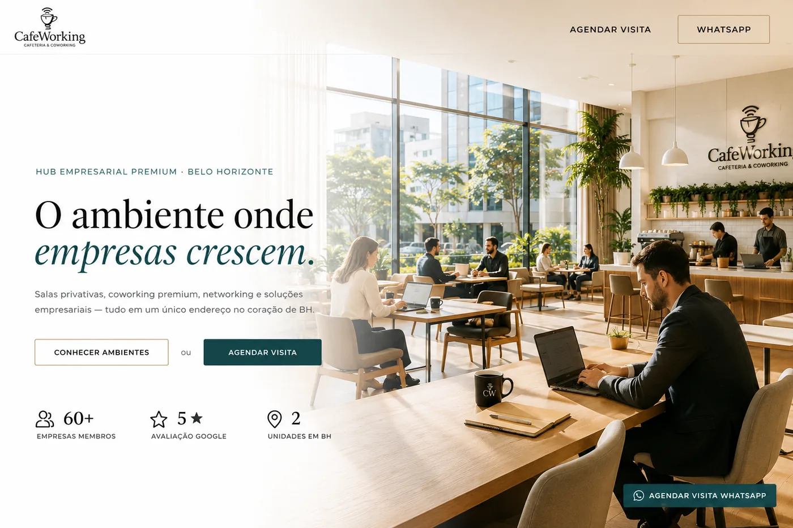

Tire suas dúvidas sobre o CafeWorking.
Reunimos as principais perguntas sobre salas, coworking, endereço fiscal, abertura de empresa, contabilidade, jurídico e eventos.

Salas, coworking e reuniões
Informações essenciais para quem quer trabalhar, reunir clientes ou reservar um ambiente premium.
Como funciona a contratação de sala privativa?
Você agenda uma visita, escolhe a unidade e o formato ideal. Depois estruturamos a proposta conforme tamanho, prazo, uso e necessidade da empresa.
Posso receber clientes no CafeWorking?
Sim. O CafeWorking foi pensado para receber clientes com imagem profissional, recepção, cafeteria, salas de reunião e ambientes elegantes.
As salas de reunião podem ser alugadas por hora?
Sim. As salas podem ser reservadas por período, conforme disponibilidade da unidade.
Existe plano mensal de coworking?
Sim. Existem opções para uso recorrente, ideal para profissionais liberais, empresários e equipes enxutas.
Endereço fiscal, abertura e suporte empresarial
O diferencial do CafeWorking é unir ambiente físico premium com soluções empresariais integradas ao Grupo Ciatos.
Posso usar o CafeWorking como endereço fiscal?
Sim. O endereço fiscal pode ser contratado para dar mais credibilidade e estrutura à sua empresa em Belo Horizonte.
O CafeWorking faz abertura de empresa?
Sim. A abertura é feita com suporte do ecossistema contábil e empresarial do Grupo Ciatos, com orientação para começar com mais segurança.
Vocês oferecem contabilidade?
Sim. A contabilidade é oferecida como solução integrada para empresas que desejam crescer com rotina organizada.
Vocês prestam suporte jurídico?
Sim. O jurídico empresarial atua como solução complementar para contratos, estruturação societária e decisões empresariais.
Ainda ficou com dúvida?
Fale com nossa equipe e entenda qual solução faz mais sentido para sua empresa.
Falar com especialista